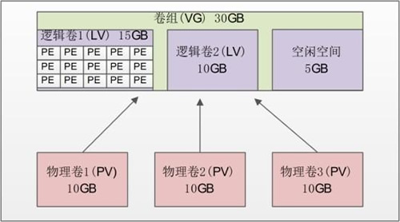
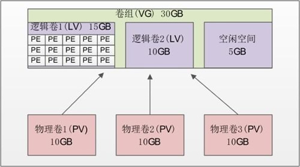

首页 > Linux > Linux高级文件系统管理
Linux LVM逻辑卷管理机制（硬盘分区管理机制）
我们在实际使用 Linux 服务器的时候，总会有一个让人头疼的问题，随着业务的增加，文件系统负载会越来越大，当到了空间不足的情况时，如果我们还在使用传统的分区方式管理硬盘，就不得不将现有的所有分区全部删除，并重新规划新的存储方案。
不仅如此，分区到底应该分多大呢？分得太大，会浪费硬盘空间；分得太小，又会面临不够使用的情况。如果在安装系统时规划不合理，这种困扰就会经常出现。如果真出现了分区不够用的情况，应该怎么解决呢？
在以往（2.4 内核以前）要想调整分区大小，要么先新建立一个更大的分区，然后复制旧分区中的内容到新分区，最后使用软链接来替代旧分区；要么使用调整分区大小的工具（如 parted），parted 虽然可以调整分区大小，但是它需要卸载分区之后才可以进行，也就是说需要停止服务。
其实，从一开始，我们就需要有一种管理机制来帮助我们动态地管理存储，LVM 就提供了这种功能。LVM 最大的好处就是可以随时调整分区的大小，分区中的现有数据不会丟失，并且不需要卸载分区、停止服务。
LVM 是 Logical Volume Manager 的简称，译为中文就是逻辑卷管理。它是 Linux 下对硬盘分区的一种管理机制。LVM 适合于管理大存储设备，并允许用户动态调整文件系统的大小。此外，LVM 的快照功能可以帮助我们快速备份数据。LVM 为我们提供了逻辑概念上的磁盘，使得文件系统不再关心底层物理磁盘的概念。

图 1 LVM 示意图
也就是说，我们在建立 LVM 的时候，需要按照以下步骤来进行：
不仅如此，分区到底应该分多大呢？分得太大，会浪费硬盘空间；分得太小，又会面临不够使用的情况。如果在安装系统时规划不合理，这种困扰就会经常出现。如果真出现了分区不够用的情况，应该怎么解决呢？
在以往（2.4 内核以前）要想调整分区大小，要么先新建立一个更大的分区，然后复制旧分区中的内容到新分区，最后使用软链接来替代旧分区；要么使用调整分区大小的工具（如 parted），parted 虽然可以调整分区大小，但是它需要卸载分区之后才可以进行，也就是说需要停止服务。
其实，从一开始，我们就需要有一种管理机制来帮助我们动态地管理存储，LVM 就提供了这种功能。LVM 最大的好处就是可以随时调整分区的大小，分区中的现有数据不会丟失，并且不需要卸载分区、停止服务。
LVM 是 Logical Volume Manager 的简称，译为中文就是逻辑卷管理。它是 Linux 下对硬盘分区的一种管理机制。LVM 适合于管理大存储设备，并允许用户动态调整文件系统的大小。此外，LVM 的快照功能可以帮助我们快速备份数据。LVM 为我们提供了逻辑概念上的磁盘，使得文件系统不再关心底层物理磁盘的概念。
Linux LVM 允许我们在逻辑卷在线的状态下将其复制到另一设备上，此成功被称为快照功能。快照允许我们在复制的同时，保证运行关键任务的 Web 服务器或数据库服务继续工作。
LVM 是在硬盘分区之上建立一个逻辑层，这个逻辑层让多个硬盘或分区看起来像一块逻辑硬盘，然后将这块逻辑硬盘分成逻辑卷之后使用，从而大大提高了分区的灵活性。我们把真实的物理硬盘或分区称作物理卷（PV）；由多个物理卷组成一块大的逻辑硬盘，叫作卷组（VG）；将卷组划分成多个可以使用的分区，叫作逻辑卷（LV）。而在 LVM 中最小的存储单位不再是 block，而是物理扩展块（Physical Extend，PE）。我们通过图 1 看看这些概念之间的联系。
图 1 LVM 示意图
- 物理卷（Physical Volume，PV）：就是真正的物理硬盘或分区。
- 卷组（Volume Group，VG）：将多个物理卷合起来就组成了卷组。组成同一个卷组的物理卷可以是同一块硬盘的不同分区，也可以是不同硬盘上的不同分区。我们可以把卷组想象为一块逻辑硬盘。
- 逻辑卷（Logical Volume，LV）：卷组是一块逻辑硬盘，硬盘必须分区之后才能使用，我们把这个分区称作逻辑卷。逻辑卷可以被格式化和写入数据。我们可以把逻辑卷想象为分区。
- 物理扩展（Physical Extend，PE）：PE 是用来保存数据的最小单元，我们的数据实际上都是写入 PE 当中的。PE 的大小是可以配置的，默认是 4MB。
也就是说，我们在建立 LVM 的时候，需要按照以下步骤来进行：
- 把物理硬盘分成分区，当然也可以是整块物理硬盘；
- 把物理分区建立为物理卷（PV），也可以直接把整块硬盘都建立为物理卷。
- 把物理卷整合为卷组（VG）。卷组就已经可以动态地调整大小了，可以把物理分区加入卷组，也可以把物理分区从卷组中删除。
- 把卷组再划分为逻辑卷（LV），当然逻辑卷也是可以直接调整大小的。我们说逻辑卷可以想象为分区，所以也需要格式化和挂载。
创建 LVM 的过程，会按照以上步骤，在后续章节中逐个讲解。
其实，在安装 Linux 系统时，我们采用的图形安装界面就可以直接把硬盘配置成 LVM（RAID 也可以在安装时直接配置），但当时我们只分配了基本分区。那是因为 LVM 最主要的作用是调整分区大小，所以就算在安装时已经安装了 LVM，我们还是需要学习 LVM 的命令（后续章节会详解介绍）。关注公众号「站长严长生」，在手机上阅读所有教程，随时随地都能学习。内含一款搜索神器，免费下载全网书籍和视频。

微信扫码关注公众号